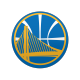

Top NBA Teams
-

1.Golden State Warriors
The Golden State Warriors are the best tesm in the nba today with a record of 55 wins and 5 losses.
-

San Antonio Spurs
The San Antonio Spurs are the second best nba team today with a record of 53 wins and 9 losses.
-

Cleveland Cavaliers
The Cleveland Cavaliers are the third best team in the nba today with a record of 44 wins and 17 losses
More information
Top Stories
For inconsistent Thunder, next game is a must win
Not officially, not with six weeks still left in the regular season, not with Oklahoma City at 42-20 and in the very spot it was fair at the start of the season to expect, battling the Clippers for the lead among the best-of-the-rest second tier in the Western Conference after the Warriors and Spurs. But Durant just inked a big red circle on the calendar around March 6, so, yeah. Sunday in Milwaukee. The Thunder lost to the Warriors on Thursday night, another in the troubling trend of being unable to beat good teams, Durant was asked how long it will take to see what his team is made of, and said, "Next game. The next game. That's the only opportunity we've got. We're going to come in and practice hard and our next game. We've got to go out there and win. That's what it's all about. Point blank. We've got to win. The best thing about our league is games come so quick. It's another opportunity for us to bounce back and get better. Our backs are against the wall right now as far as where we want to be as a team. But if you've made it to this level you've had your dark days and this is how you pull out of them. We've got to win.
Like most everyone, Dell Curry enjoying Steph's run
The man who is 50 percent responsible for giving us a fresh new American sports icon is often tortured, because he can't always enjoy the show and feel his jaw hitting the floor like everyone else. While his son is busy shattering NBA shooting records and gradually earning one-name recognition from the masses -- "Steph" is all you need now -- Dell Curry is often busy at work. He is a TV analyst for the Charlotte Hornets and the NBA schedule doesn't always cut the Currys some slack. But last Saturday in Atlanta brought an off-night for Dell. In these situations while on the road, he'll catch a Golden State Warriors game at a local sports bar. This time he retreated to his hotel room, where his neighbors certainly heard a loud yell and maybe a fall-off-the-chair thump just before midnight Eastern. "I get asked all the time about what it's like to watch him play, and actually, Kemba Walker just came up to me and asked the same thing," Curry said. "And my answer is the same: I'm a fan just like you all. I get speechless like everyone else trying to explain what I see. And when he hit that shot, I screamed just like everyone else. Whoever was in the next room, I apologize." I don't think you can compare the '90s, the '80s, the '70s to what's happening today. Different players, different rules, different game. Those comments he made ... I think they were funny. I didn't put a lot of stock in them. That's all I'll say. – Dell Curry, on Oscar Robertson's comments That shot would be the game-winning pull-up jumper from nearly half court that broke Twitter and the hearts of the Oklahoma City Thunder. And that player is Stephen Curry, ready to replace Kobe Bryant and LeBron James as the most watchable player maybe in all pro sports, based on what he's done the last week, month and heck, the last few seasons running. It's not a stretch to say Curry is laying the foundation for iconic status, for he is already an NBA champion and soon-to-be two-time Kia MVP, yet he's still in his prime. He's on pace to push the single-season and career 3-point records beyond reach, maybe alongside Wilt Chamberlain's records. He's the rare box-office behemoth who sells out arenas in February. And the Warriors, rumbling towards 70-plus wins, will fit the definition of a dynasty if they keep this up.
Clippers know Griffin holds key to any long playoff run
Blake Griffin is the direction Paul wanted. Any discussion about the Los Angeles Clippers, where they are as one of the hot teams of the league and where they are going with new hope as a Western Conference threat to the rival Golden State Warriors is about the power forward who is missing but very present. I don't care if he gets back the day before the playoffs. We're playing for a championship and there's no championship without Blake Griffin. There's not one.– Chris Paul, on Blake GriffinAsked about his statistical spike the last two months with Griffin sidelined (partially torn quadriceps and a fractured right hand), plus the play of DeAndre Jordan, and Paul said, "We can't win a championship without Blake. That's the only reason we play."Paul was asked if he is concerned about Griffin returning too close to the playoffs, without enough time for the Clippers to find a rhythm, and he said, "I don't care if he gets back the day before the playoffs. We're playing for a championship and there's no championship without Blake Griffin. There's not one."Pressed whether the Clips will need some lead time, a couple weeks for Griffin to get back in game shape and for the rotation to reclaim its flow without threat of imminent postseason elimination, and Paul said, "We don't know. As soon as he's ready, we're going to go from there. But do we need him? We'd be crazy to say, 'No, no,' you know what I mean? It's 'Yeah, yeah.' We're just going to take it day by day."
"News | NBA.com." News | NBA.com. N.p., n.d. Web. 06 Mar. 2016.